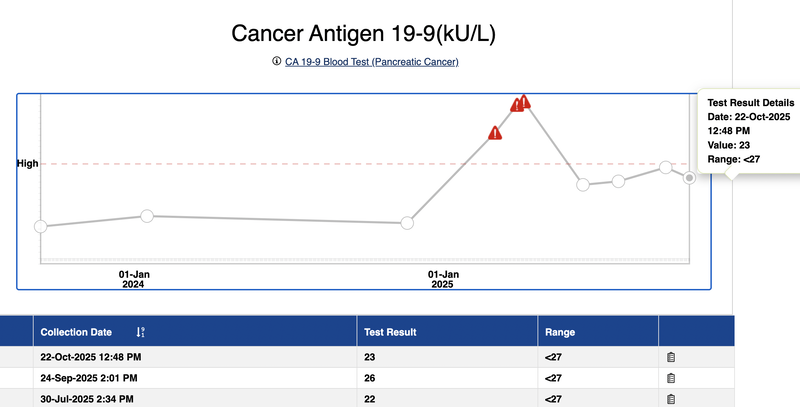
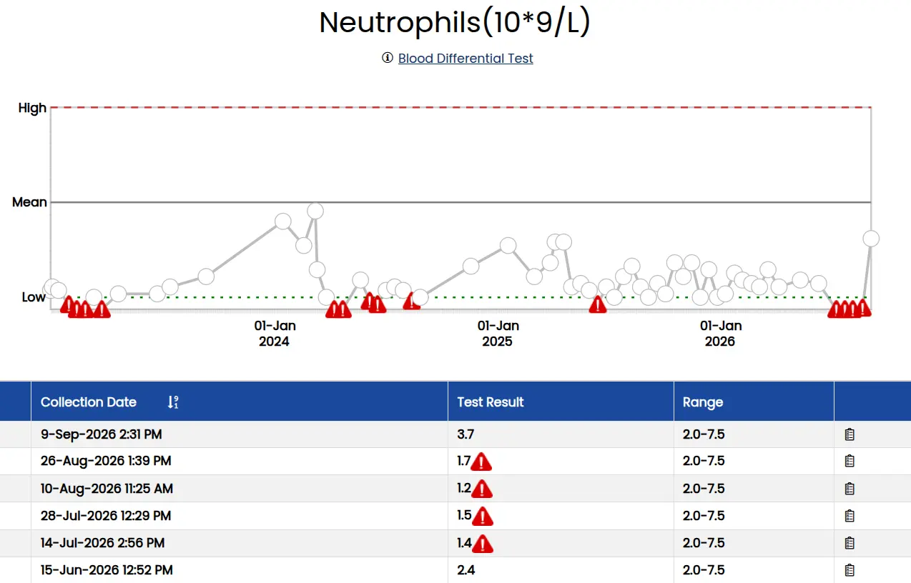
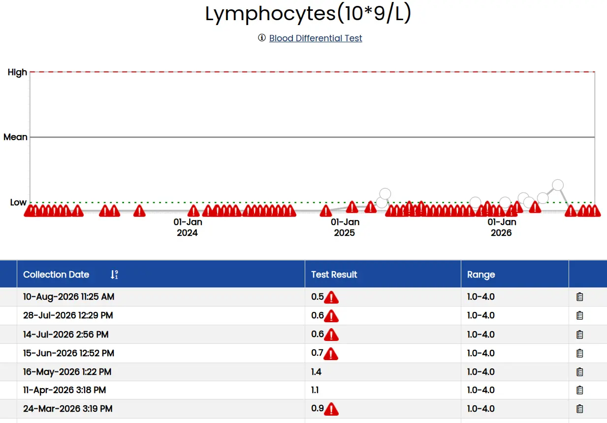
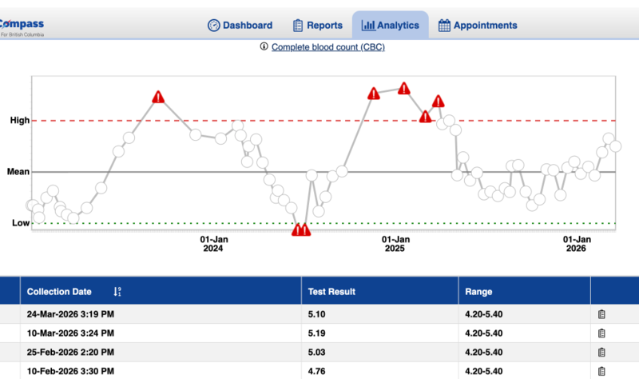
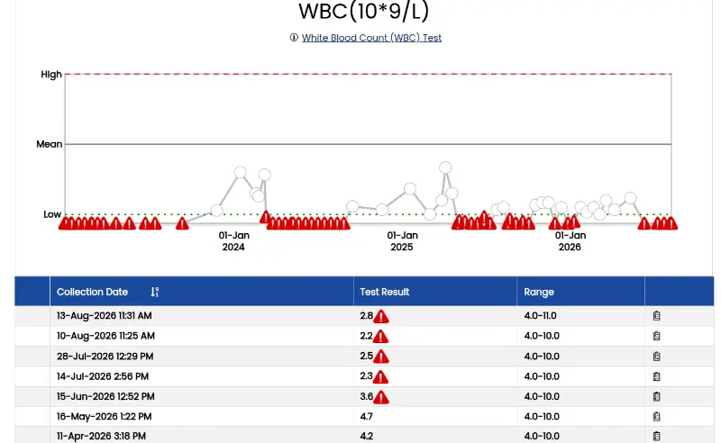
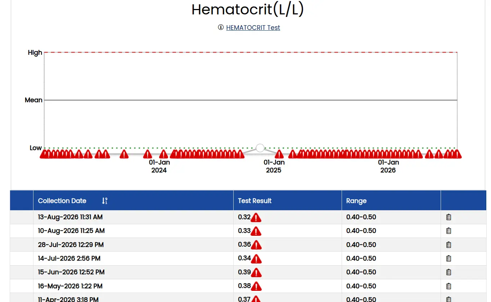
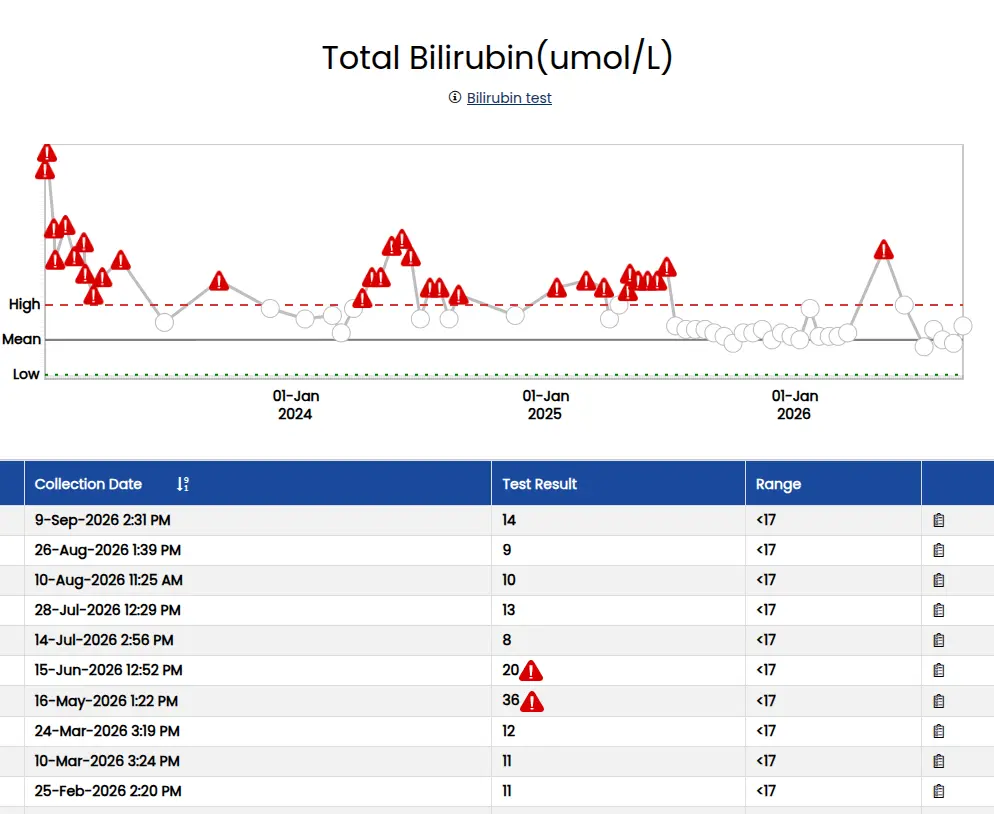
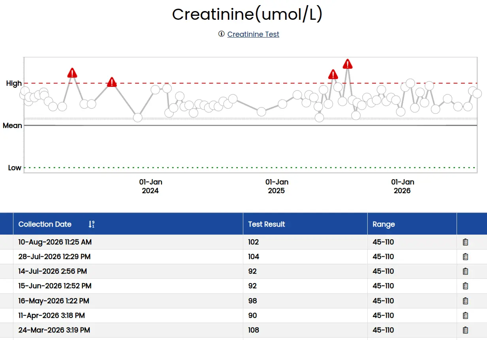

Blood Tests










What is a blood differential test?
A blood differential test measures the amount of each type of white blood cell (WBC) that you have in your body. White blood cells (leukocytes) are part of your immune system, a network of cells, tissues, and organs that work together to protect you from infection. There are five different types of white blood cells:
- Neutrophils are the most common type of white blood cell. These cells travel to the site of an infection and release substances called enzymes to fight off invading viruses or bacteria.
- Lymphocytes. There are two main types of lymphocytes: B cells and T cells. B cells fight off invading viruses, bacteria, or toxins. T cells target and destroy the body’s own cells that have been infected by viruses or cancer cells.
- Monocytes remove foreign material, remove dead cells, and boost the body’s immune response.
- Eosinophils fight infection, inflammation, and allergic reactions. They also defend the body against parasites and bacteria.
- Basophils release enzymes to help control allergic reactions and asthma attacks.
However, your test results may have more than five numbers. For example, the lab may list the results as counts as well as percentages.
Other names for a blood differential test: Complete blood count (CBC) with differential, Differential, White blood cell differential count, Leukocyte differential count
What is it used for?
The blood differential test is used to diagnose a variety of medical conditions. These may include infections, autoimmune diseases, anemia, inflammatory diseases, and leukemia and other types of cancer. It is a common test that is frequently used as part of a general physical exam.